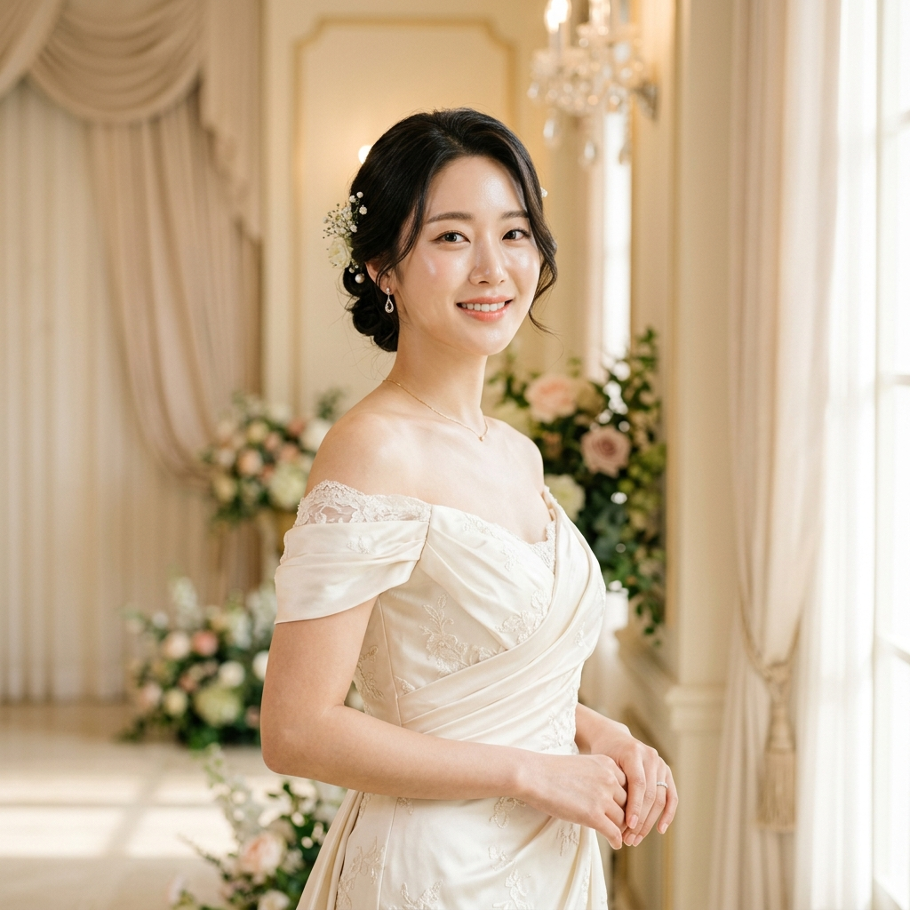
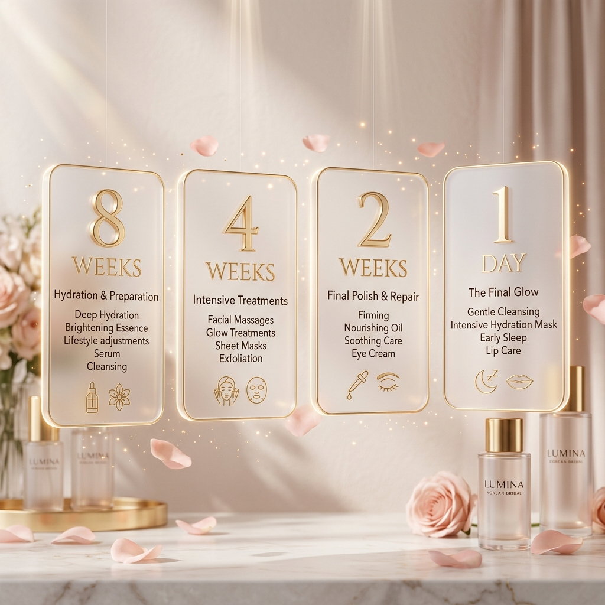

K-Beauty Medspa • Carrollton HQ
All treatments at SuA Glow are performed under medical oversight. Results are individualized based on patient goals and assessment.
Korean Bridal Skin Planning. Wedding skin is different, because wedding skin is photographed forever.
The Seoul Bridal Philosophy
The close-up photos. The bridal suite lighting. The ceremony makeup. The HD cameras. At SuA Glow, Bridal Glow is a personalized Korean-inspired wedding skin preparation program designed to help brides look naturally radiant.
Because in Seoul aesthetics, bridal beauty is not about looking dramatically different overnight. Bridal aesthetics is about looking healthy, balanced, hydrated, and elegant under lighting.

Bridal Skin Assessment
All Bridal Treatments at SuA Glow are performed by Sophia Yang, PA-C under appropriate medical oversight and delegation by supervising physician Dr. Adam Yang in accordance with Texas law and established clinical protocols.
The Strategic K-Beauty Approach
A customized 6-to-8 week program designed around your wedding date, allowing time for collagen remodeling and barrier recovery.
Options like TrapTox for elegant shoulders and necklines, or CalfTox for lower leg contouring to match your dress style.
Refinement focused on smooth makeup application and balancing facial movement without losing natural, joyful expressions.
Skin boosters and RF skin tightening like Oligio X to support collagen, ensuring your skin reflects light beautifully on HD cameras.
Personalized For Your Wedding
Refining texture so high-definition cameras capture your skin at its most elegant.
Creating a smooth, hydrated canvas ensuring makeup sits beautifully without settling.
Restoring inner luminosity through deep hydration for a "Quiet Luxury" glow.
Using SkinTox to refine pores and texture while preserving your natural smile and joy.
Body neuromodulators tailored to enhance the neckline and shoulders of your gown.
Strategic timing ensures no last-minute recovery panic, just confidence.

Bridal TimelineModern Korean aesthetic philosophy emphasizes timing and layering rather than aggressive last-minute treatment. Collagen remodeling takes time. Hydration support builds gradually.
At SuA Glow, Bridal Glow is intentionally structured around the countdown to the event. Because beautiful bridal skin is usually planned — not rushed.
Seoul Precision. Bridal Elegance.
The goal is not to look dramatically different on your wedding day. The goal is "your skin on its best behavior."
No rushed wedding injectables. No "we'll just do filler everywhere" philosophy. No bridal regret energy. We focus on elegant, refined, healthy-looking skin that photographs beautifully.
Introducing collagen support early, and hydration/glow-focus closer to the event.
Evaluating your timeline, goals, and dress style to tailor every single treatment step.
More aggressive treatment is not always smarter treatment before a wedding. We prioritize predictability.
Evaluation of your wedding timeline, skin texture, dress style, and photography considerations.
Early treatments focusing on collagen remodeling, RF tightening (like Oligio X), and body tox balancing.
SkinTox and hydration boosters introduced to perfect texture and lock in moisture.
Elegant, radiant, flawless-under-makeup skin that photographs beautifully and naturally.
Many patients begin bridal skin planning approximately 6–8 weeks before their event, depending on treatment goals and clinical assessment. Some collagen-support treatments may benefit from additional planning time.
Modern Korean bridal aesthetics often prioritize healthy-looking skin, balanced facial movement, hydration-focused care, refined texture, and subtle facial harmony. The goal is polished, elegant skin that photographs beautifully and still looks like you.
That is one of the most common reasons patients seek bridal skin prep. Hydration-focused and SkinTox-style approaches help support smoother makeup application, refined pores, and improved skin reflection. Because wedding makeup is only as smooth as the skin underneath it.
Yes. Depending on anatomy, treatment goals, and clinical assessment, Bridal Glow planning may incorporate body-focused refinement approaches such as TrapTox-style shoulder and neckline balancing or CalfTox-style lower leg contour approaches, individualized based on your dress style.
K-Beauty Medspa • Carrollton HQ
All treatments at SuA Glow are performed under medical oversight. Results are individualized based on patient goals and assessment.